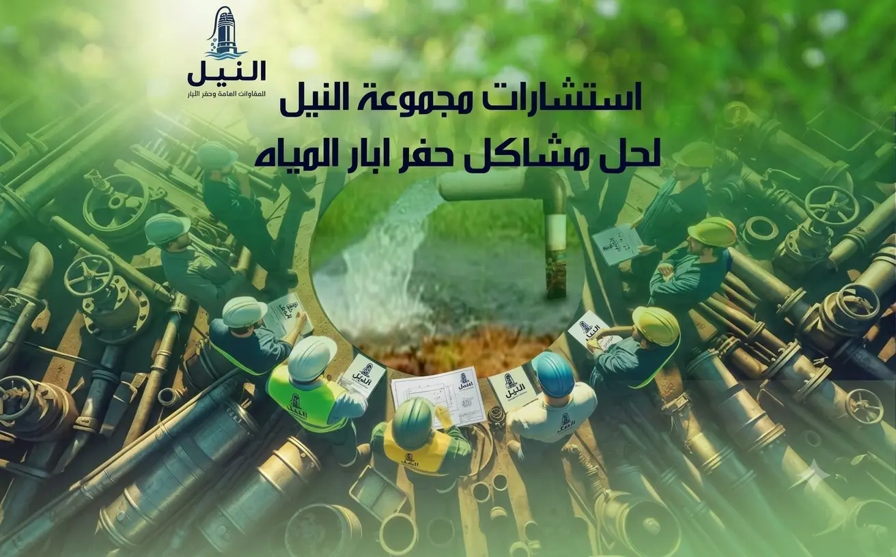
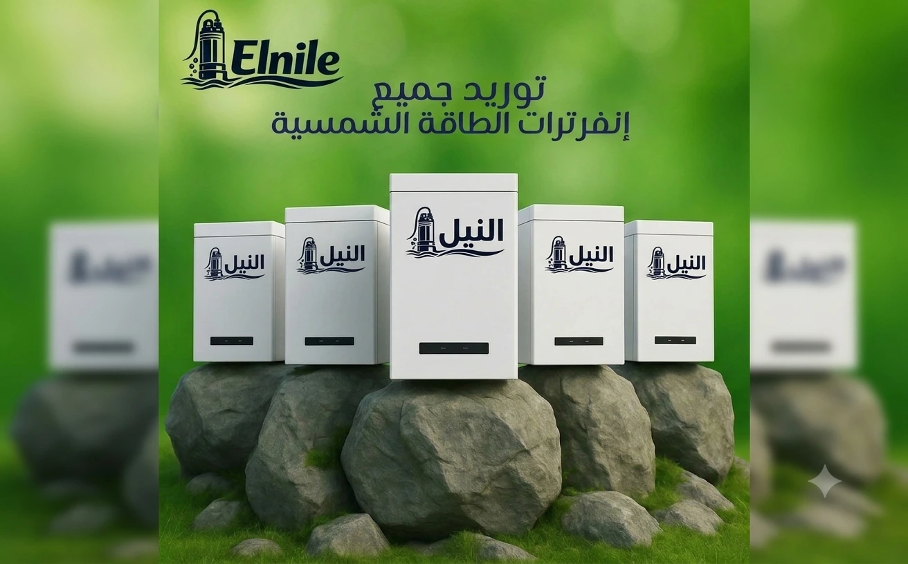

خدماتنا
نقدم حلولاً متكاملة تبدأ من الدراسات الجيوفيزيائية وجسات التربة لتحديد أفضل المواقع، متبوعة بـ حفر آبار المياه وتجهيزها بأفضل الخامات مثل مواسير بلاستيك UPVC و توريد مواسير الآبار: سيملس وحديد. ولضمان كفاءة التشغيل، نقوم بـ توريد طلمبات و مواتير أعماق و كابلات طلمبات اعماق عالية الجودة. كما ندعم مشاريعكم بالطاقة النظيفة عبر توريد ألواح الطاقة الشمسية و توريد إنفرترات الطاقة الشمسية. نحن هنا لدعمكم عبر استشارات فنية مجانية، بالإضافة لخدمات تصوير الآبار تليفزيونيًا و صيانة ابار المياه جوفية لضمان استدامة مشاريعكم.

تصوير الآبار تليفزيونيًا
تصوير آبار المياه بالكاميرا تليفزيونياً. فحص دقيق لـ 10 نقاط (المواسير، الفلاتر، مستوى الماء، التسريبات). احصل على تقرير شامل اليوم من النيل.

الدراسات الجيوفيزيائية وجسات التربة
نقدم أدق الدراسات الجيوفيزيائية وجسات التربة لتحديد أماكن المياه الجوفية وعمقها. استفد من أحدث الأجهزة والتقنيات لتحديد المواقع المثالية للحفر.

استشارات فنية مجانية
هل لديك سؤال حول حفر أو صيانة بئر؟ نقدم استشارات فنية مجانية وشاملة لمساعدتك في كل مراحل مشروعك. استفد من خبرتنا الآن.

توريد طلمبات و مواتير أعماق
طلمبات الأعماق الغاطسة ومواتير الغطس من النيل. موزع معتمد لأفضل الماركات العالمية Shakti و Grundfos وغيرها، مع الضمان والصيانة.

توريد إنفرترات الطاقة الشمسية
توريد انفرترات طاقة شمسية بأفضل الأسعار في مصر. نوفر أفضل الماركات العالمية مثل Veichi و Invt وغيرها لضمان تشغيل الطلمبات بكفاءة عالية.

توريد ألواح الطاقة الشمسية
محطة طاقة الشمسية من النيل: كل ما يخص تركيب الألواح، وأنظمة الري بالطاقة الشمسية بأعلى كفاءة لتوفير الكهرباء وضمان التشغيل المستمر.

صيانة ابار المياه جوفية
بعد عملية حفر الآبار، يلزم إجراء صيانة دورية ومراقبة لشبكة المياه. نقدم خدمات فحص، تطهير، وإعادة تأهيل الآبار لضمان تدفق المياه بشكل مستقر.

حفر آبار المياه
حفر آبار مياه مع النيل: خبرة 25 عامًا وأفضل سعر للمتر. نضمن لك الوصول للمياه بأحدث الحفارات وعلى يد طاقم هندسي متخصص.

توريد مواسير الآبار: سيملس وحديد
لأساسات آبار تدوم طويلاً، نوفر مواسير سيملس وحديد عالية الصلابة ومقاومة للتآكل والضغوط العالية بكافة المقاسات لتلبية كافة المشاريع.

مواسير بلاستيك UPVC
مواسير آبار بلاستيك UPVC بأفضل الأسعار نوفر كافة الأقطار والضغوط لتبطين الآبار وحمايتها من الانهيار ومقاومة الأملاح والصدأ.

كابلات طلمبات اعماق
نوفر كابلات بحرية معزولة بأعلى جودة تضمن استمرارية تشغيل طلمبات الأعماق الغاطسة تحت الماء بأمان تام ومقاومة تامة للظروف الصعبة.